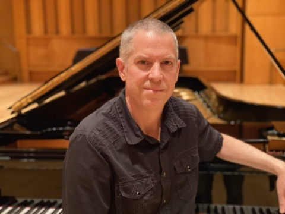

|

|
BMUS Piano Performance, Western Washington
University
Diploma of Piano Technology,
WITCC
Factory Concert Technician,
Steinway NYC 97-99
After receiving his Bachelors of Music in Piano Performance, Ted mulcahey
completed a program and learned the craft of piano technology under Douglas
Neal at WITCC in Sioux City, Iowa. He received his advanced training from
Steinway and Sons in New York City, where he became a Concert Technician and
head of the Steinway Hall Selection Room. There he prepared seven and nine-foot
concert grands for selection and performed concert work on Steinway instruments
in major Manhattan venues including Carnegie Hall and Lincoln Center.
He has worked for other venues including The Oregon Symphony, Aspen Festival
of Music, Sarasota Music Festival and Chamber Music Northwest. Mulcahey has
performed concert work for reknowned pianists including Richard Goode, Marc-Andre
Hamelin, Garrick Ohlssohn, Stephen Hough and Martha Argerich. He practiced
several years in the Pacific Northwest servicing and rebuilding pianos for the
Steinway Dealer and was the head technician for Reed College and Linfield College.
He enjoys making the most out of a piano and is sought out for his ability to
manipulate piano tone and touch. Currently he serves as the Head Piano
Technician and Operations Manager for the College of Music at the University
of Colorado, Boulder.